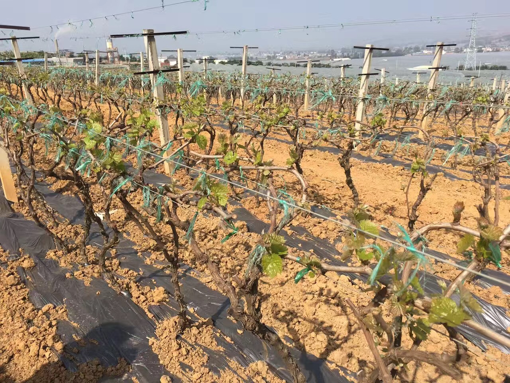
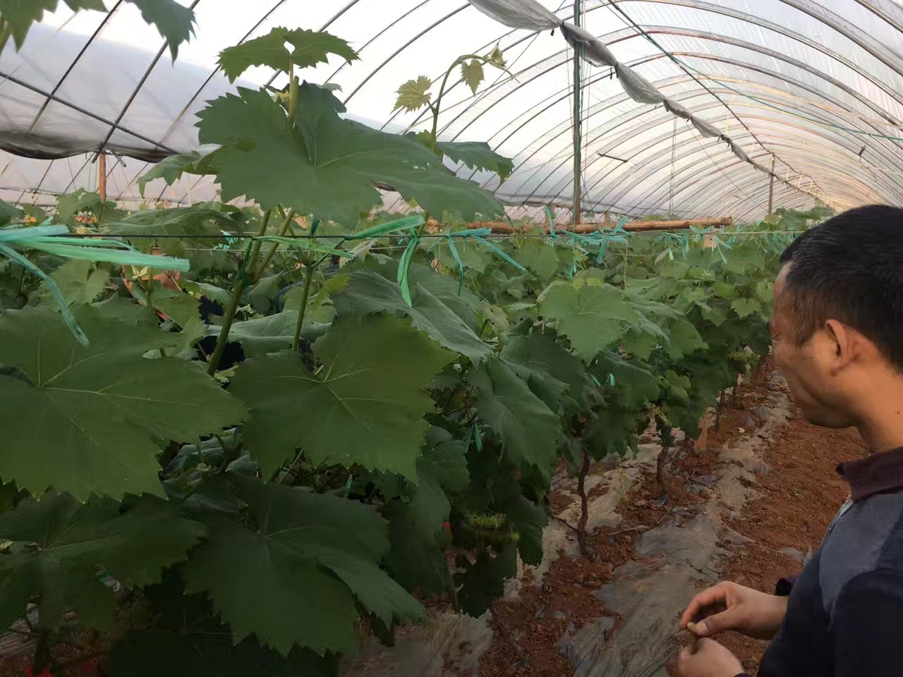

通过开发智慧农业系统使人们随时获得农作物精确的需水信息， 并实现精准灌溉， 具有低功耗、 低成本、 扩展灵活等优点。
本公司所生产的产品均符合《中华人民共和国农业法》法规之规定所生产， 是以台湾中兴大学与南京农业大学为技术支撑，借鉴台湾先进的现代生态观光农业的模式， 生产推广的一种目前国内市场最先进的生态微生物菌剂。专门针对国内地区，由于化肥及农家肥的滥用导致年产量低下， 更由于产量低下诱使超量使用化肥而使得我们的土地酸化、板结， 最后将我们赖以生存的土地推向几乎无法恢复生产窘境而研发出来的高科技生态菌肥。
常使用本产品，会使土地松软，酸碱逐步恢复接近PH7的最佳种植状态。
土壤主要由矿物质、有机质和微生物三部分组成，本产品为一种很特殊的有益放射线菌，具有分解几丁质的能力， 对病虫害具有防和治的双重效果，广泛应用于所有农作物。
本产品开根能力比市面上一般产品高6－10倍，强壮根部， 促进植株养分的吸收，使作物生长旺盛。绿色、环保、生态可持续发展，富含17种主要氨基酸，34种次氨基酸， 可以使植株发育更为优良，保花保果，提升品质和甜度，促进成熟提前采收，延长贮藏时间。
本产品纯生物发酵， 是纯天然无残留无毒无公害的液肥，完全不含任何激素和有害化学成分， 是未来农业产业可持续发展、农产品市场竞争力显著提高的至胜法宝！
省肥省成本 改良土壤 增产增甜 提早上市 ——人可食用的肥料 湖南蓝钻科技有限公司